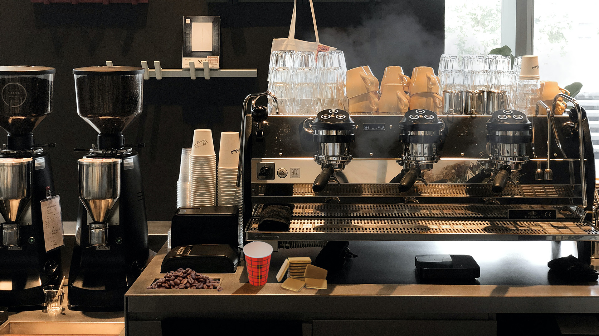
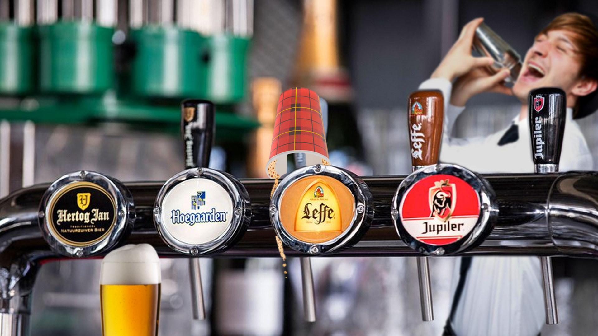
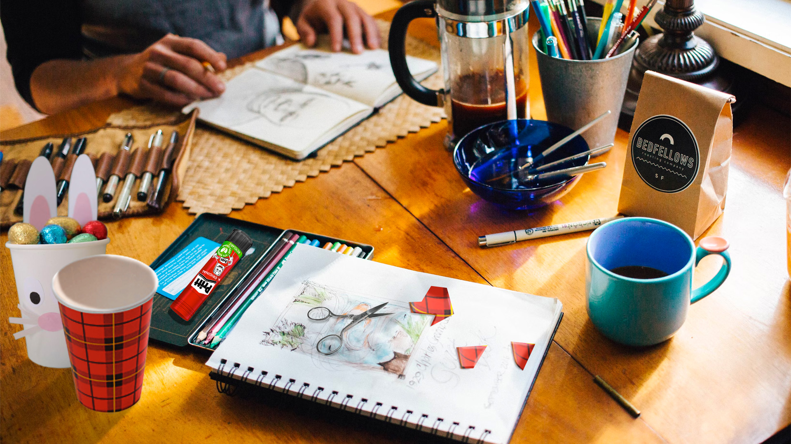
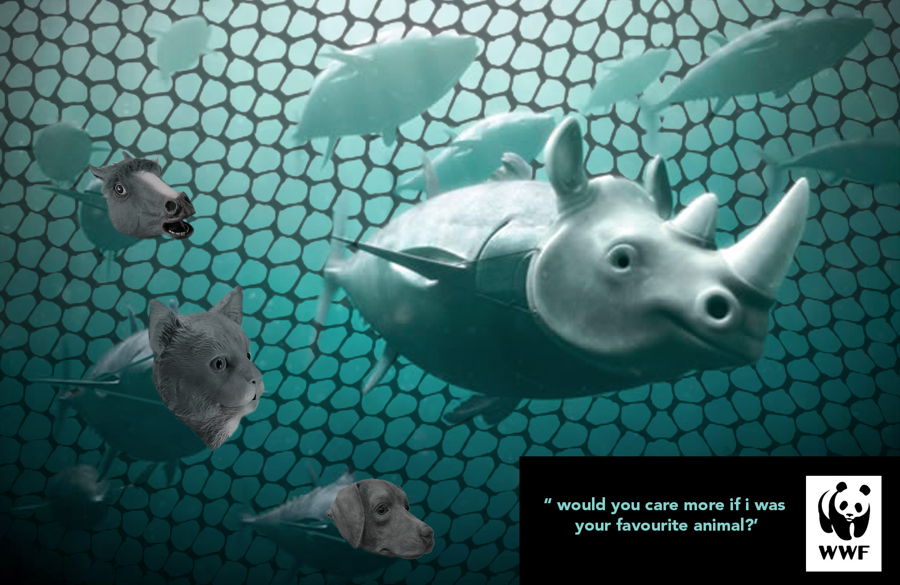
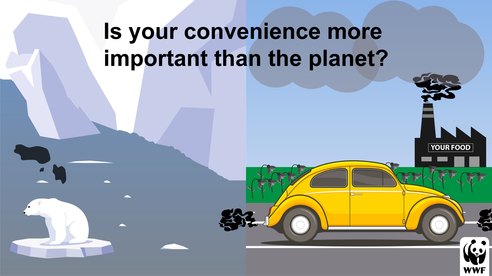

Voor het vak beeldtaal hadden we 3 opdrachten: Semiotiek (Plaats een object in 3 verschillende sferen en contexten en neem een indexicaal teken op om het beeld te versterken.), Retorica (Zoek een bestaande visual van een bewustwordingscampagne en verbeter deze) en de eindopdracht (Maak een ethisch verantwoorde poster, voor een bewustwordingscampagne of een reclamecampagne, voor een specifieke doelgroep).
Ik heb bij dit vak geleerd wat Semiotiek en Retorica is en hoe belangrijk het is dat er bepaalde visuals in bijvoorbeeld een poster zit. De kleine details die toch het gevoel overbrengen wat je als designer wilt overbrengen. Ik weet nu door het vele onderzoeken en het echt toepassen ook een stuk beter wat de Gestaltwetten zijn en hoe je dat kan toepassen tijdens het maken van iets. Vaak pas je deze onbewust wel al toe, maar nu sta ik er wel meer bij stil wat voor impact bepaalde elementen kunnen hebben op de vormgeving en gevoel wat daarbij komt kijken.
Semiotiek
Bij deze opdracht is het de bedoeling dat je een object uitkiest en dat je de betekenis van het object in 3 visuals steeds verandert door de context en de sfeer waarin het object geplaatst is. Deze context stel je samen uit minimaal 4 verschillende visuals. De context en de sfeer moeten realistisch zijn en bij het object passen. Het object mag geen persoonlijkheid krijgen toebedeeld. In elke visual moet in ieder geval 1 keer bewust gebruik worden gemaakt van een indexicaal teken. Alle gemaakte keuzes moeten worden onderbouwd.
  Retorica
Zoek een bestaande visual van een bewustwordingscampagne (Sire, Amnesty International, WF, Greenpeace etc.), maak een Retorische analyse, benoem de gebruikte Gestaltwetten en geef ook de indexicale tekens aan. Maak vervolgens een kopie van de visual en maak de visual nog overtuigen- der. Onderbouw je aanpak en de gemaakte keuzes. Zoek zelf een aantrekkelijke, originele manier waarop je je analyse visueel inzichtelijk maakt.
eindopdracht
Maak een ethisch verantwoorde poster, voor een bewustwordingscampagne of een reclamecampagne, voor een specifieke doelgroep. Pas elementen uit de verschillende theorieën (Semiotiek, Retorica en Gestalt) toe en onderbouw met welk doel je de verschillende elementen gebruikt hebt.
